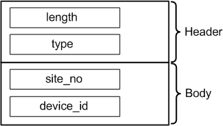

DeviceIdAttrType
Contains the device ID (dev@) and the site ID for the device. If multisite testing is performed, multiple DeviceIdAttrType attributes are included in a given TestFlowStartEventType event record.
The data type is DRLDeviceIdAttr.

Field Name |
Data Type |
Description |
Comments |
|---|---|---|---|
length |
int |
Attribute length |
These fields form the attribute header. |
type |
short |
Attribute type |
|
site_no |
char |
Site number |
|
device_id |
string |
Device ID, format:
|
|
Functional changes
- Introduced before SmarTest 6.3.2